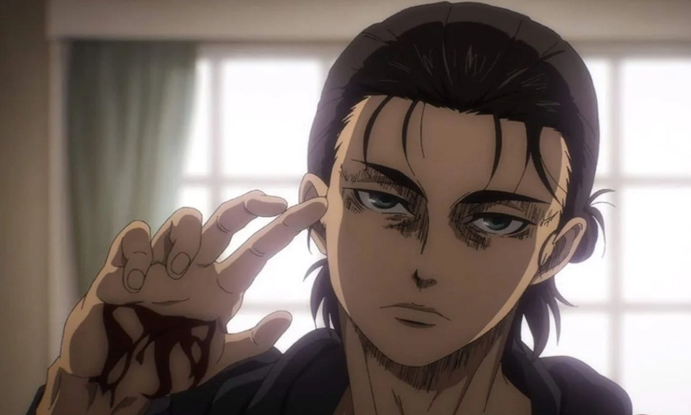
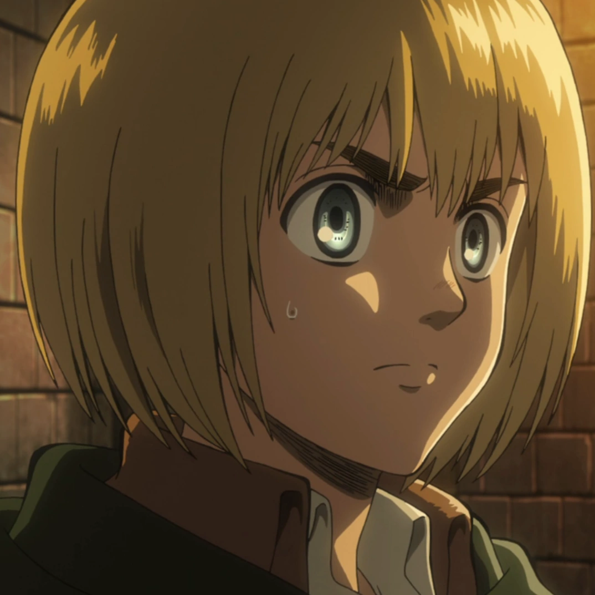
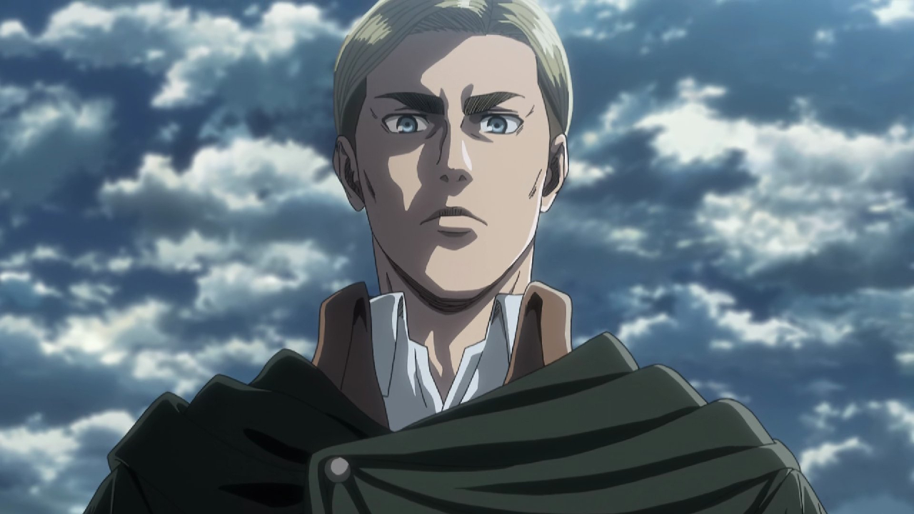
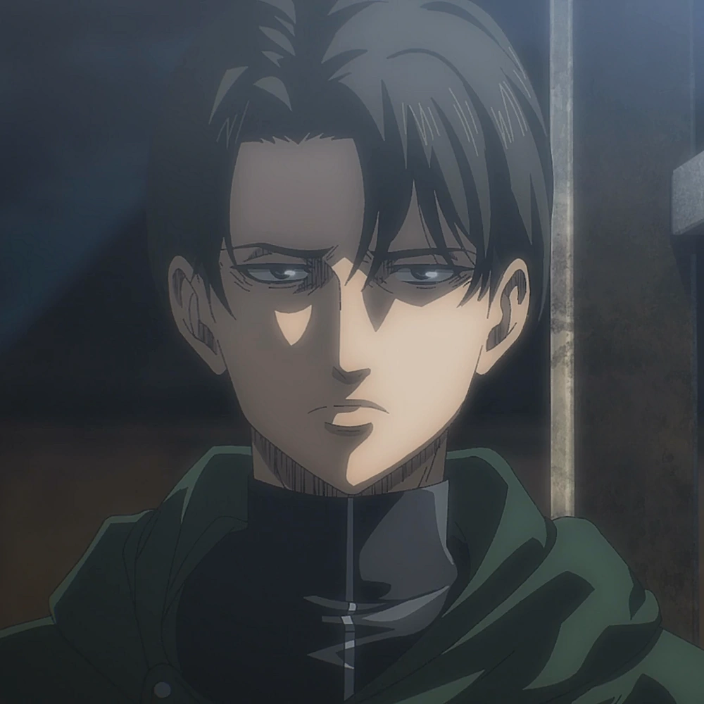
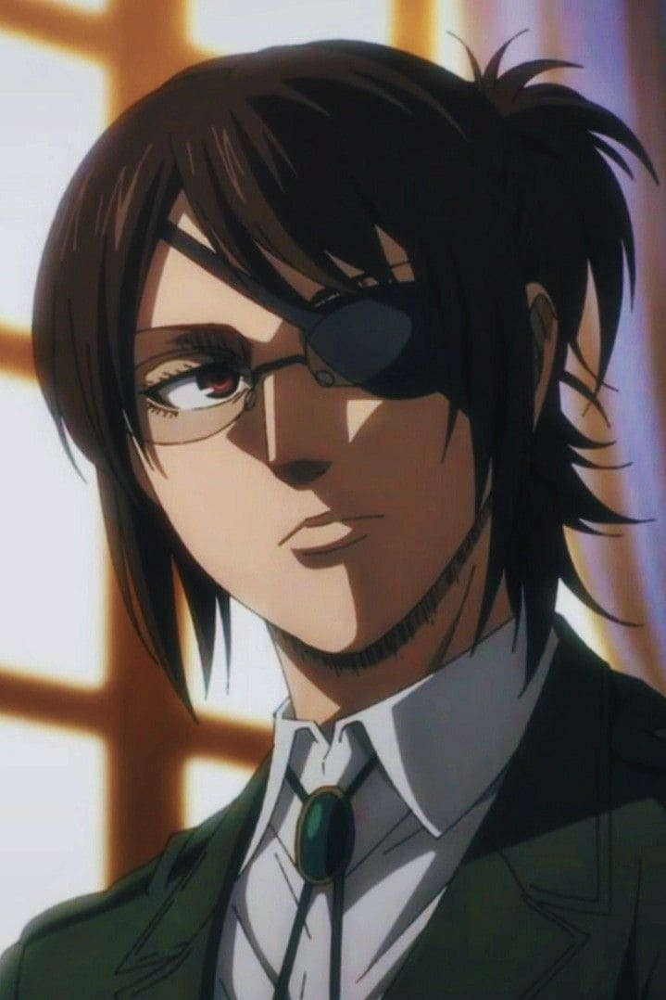
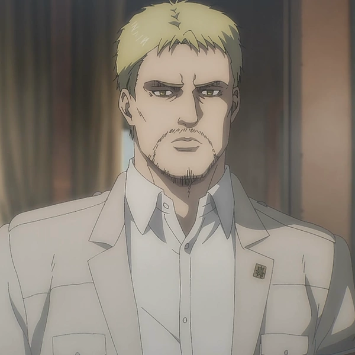
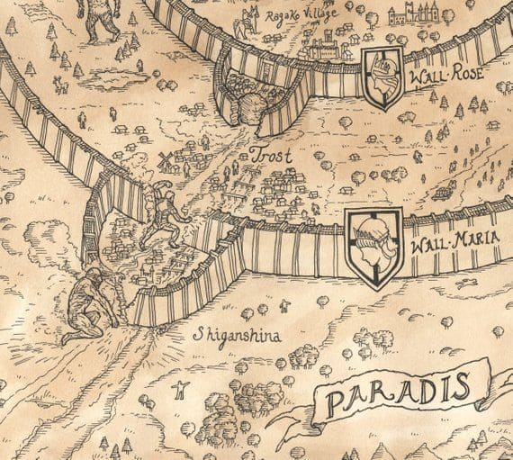
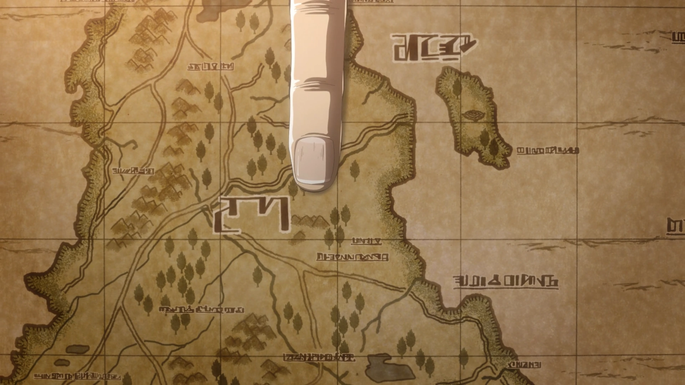

Personatges Principals
Eren Jaeger (Protagonista):
Pertany a la Legión de Reconocimiento, li agrada fer les coses per la seva mà.
Mikasa Ackerman (Personatge secundari):

És la germana adoptiva de Eren, també és part de la Legión de Reconomimiento.
Armin Arlet (Personatge secundari):
És el millor amic desde la infancia de Eren, i pertany a la Legión de Reconocimiento.
Erwin Smith (Personatge secundari):
És el comandant de la Legión de Reconocimiento.
Levi Ackerman (Personatge secundari):
És el capità de la Legión de Reconocimiento.
Hanji Zoe (Personatge secundari):
És la comandant de la Legión de Reconocimiento, companya de Levi.
Reiner (Personatge Secundari):
Formava part de la Legión de Reconocimiento però per certes circumstàncies va deixar-ho.
Escenaris Principals
Paradise:
És on ocurreix gran part de la sèrie, concretament les 3 primeres temporades, i és on troben els protagonistes
Marley:
Aquest territori és descobert al principi de la temporada 4 i es torna el nucli de tota aquesta última temporada